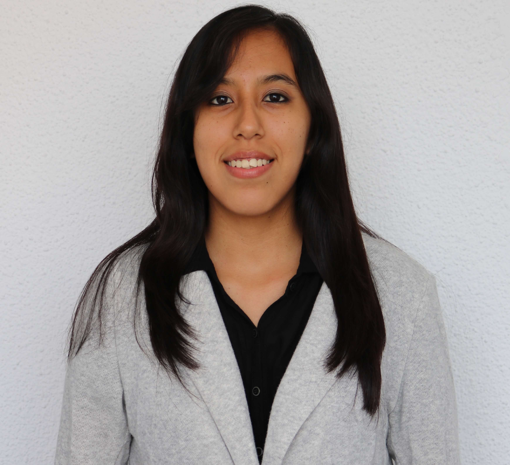

ABOUT ME

Hola, soy Fiorella Cisneros, Ingeniera de Sistemas y actualmente egresada de Laboratoria como Front-end Developer Jr. Inmersa en el mundo tecnológico con especial interés en el desarrollo de productos para dispositivos móviles. Me instruyo con nuevos conocimientos, a través de cursos en línea; intelectualmente competente, con habilidades y aptitudes básicas necesarias para asumir el reto de trabajar en la carrera del futuro.